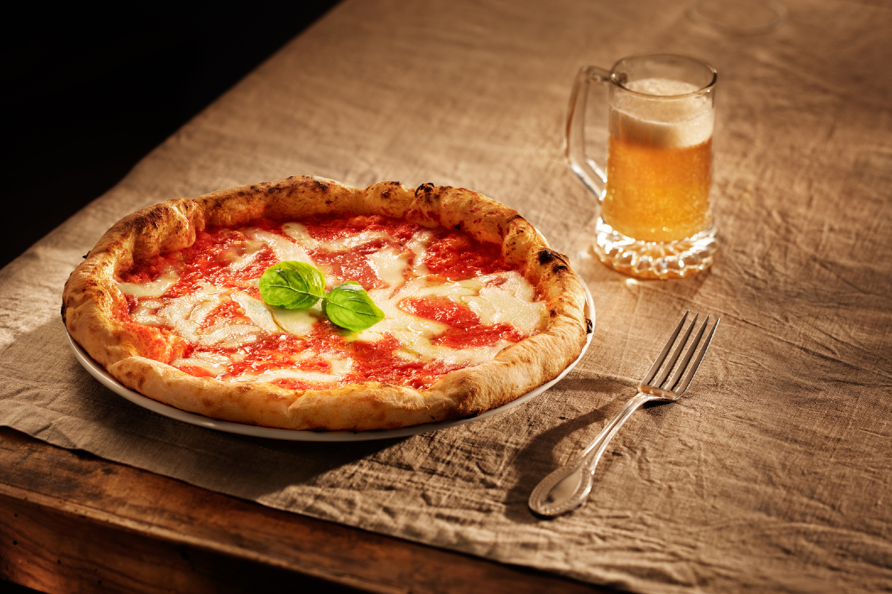

Como hacer Pizza
"Pizza è la parola italiana piú famosa al mondo, prima di ciao"
Ingredientes:
- 400g de Harina
- 200 ml de agua tibia
- 2 cucharadas de aceite de oliva
- 15 gramos de levadura fresca
- 1 pizca de sal
- Harina para la encimera (para que no se pegue)
Receta:
- Para hacer la masa de pizza italiana es muy sencillo. En un bol agregamos el aceite, el agua y la levadura. Mezclamos y seguidamente le añadimos la harina y la pizca de sal. Una vez que tengáis mas o menos mezclado todo en el bol lo pasamos a la encima para amasar bien.
- Ahora comienza el amasado. Ponemos un poco de harina en la encimera y tendremos que amasar como 3 o 4 minutos sin parar. Veremos que hemos terminado cuando la masa esté lisa totalmente, si se pega mucho le ponemos un poco de harina y seguimos hasta que quede lisa.
- Ahora una vez lista, la dejamos reposar durante 1 hora más o menos. Una vez reposada la partimos en dos y podemos hacer dos pizzas muy majas. La amasamos y estiramos. Ponemos lo ingredientes y al horno. Listo!
- Cuando tengas la masa de pizza esponjosa lista, deberás darle forma de tubo largo y cortarla en 4 particiones. Después, haz una bola con cada partición y tápalas con un trapo limpio y seco. Deberás dejarlas reposar durante 45 minutos. Verás que, poco a poco, empiezan a elevarse hasta duplicar su volumen. Cada bola de masa te servirá para hacer una pizza casera normal.
- Pasado el tiempo correspondiente, espolvorea un poco de harina sobre una mesa para preparar la pizza casera, coge una de las bolas y colócala sobre ella. Ahora deberás extenderla con tus manos estirando desde el centro hacia los costados, dándole forma circular. Si dispones de rodillo también puedes utilizarlo para que quede más fina la masa. Una vez estirada, ya puedes añadir la salsa para pizza casera y los ingredientes para pizza que prefieras. Puedes usar esta deliciosa receta casera de salsa de tomate y cebolla para pizza.
- Una vez hayas escogido los ingredientes y tengas tu masa de pizza casera terminada, deberás precalentar el horno a temperatura máxima durante unos 20 minutos.
- Pasado el tiempo, introduce la preparación pizza casera y hornéala durante 10 minutos aproximadamente. Deberás vigilarla porque el tiempo final variará en función del tipo de horno y la intensidad que tenga. ¡Listo, tu pizza casera al horno estará para chuparse los dedos!

Informacion nutricional:
- Calorías: 285-300 kcal
- Grasas: 10-15 g
- Grasas saturadas: 4-7 g
- Carbohidratos: 35-40 g
- Azúcares: 2-5 g
- Proteínas: 10-15 g
- Fibra dietética: 2-3 g
- Sodio: 550-700 mg